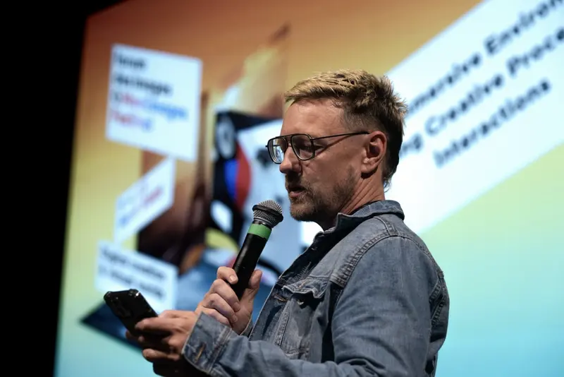
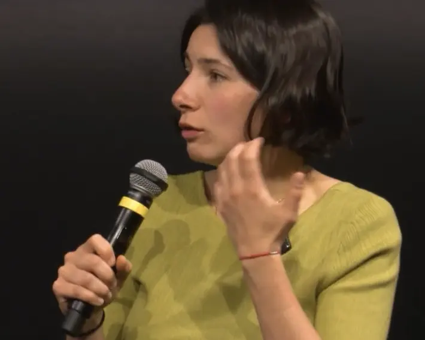
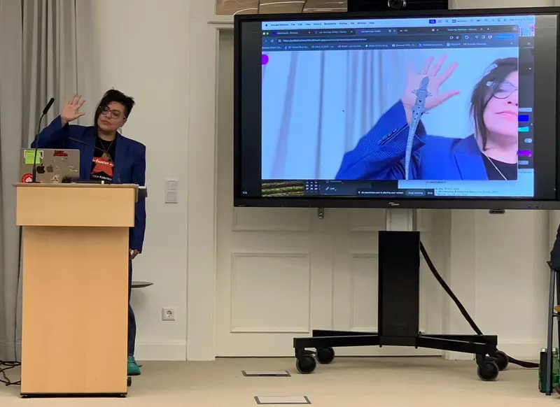

Press
We make films, immersive experiences and computational storytelling systems across screen, space and code. We give interviews and we provide images, clips and background on every work.



What we can provide
- Contact with directors, artists, producers and collaborators
- Press materials and digital assets
- Images and photography
- Trailers and video excerpts
- B-roll, raw footage or edited clips on request
- Graphics and stills
- Slides and presentation materials
- Interviews by email, remote or in person
- Studio visits where possible
- Broadcast-quality audio and video participation where feasible
- Attendance at select screenings, exhibitions, talks and events
What we can talk about
- Film futurism
- Documentary innovation
- XR, VR and spatial storytelling
- Feminist AI
- Computational creativity
- Nonhuman characters and AI animation
- Embodied interfaces
- Real-time image systems
- Indigenous and non-Western systems
- Access, infrastructure and public life
- Technologies of distribution
- Art, politics and emerging media
- Public-interest storytelling
- Experimental animation and immersive narrative design
Write to us
To speak with United Notions Film about any of these topics, or about a specific work, write to this address.
See also